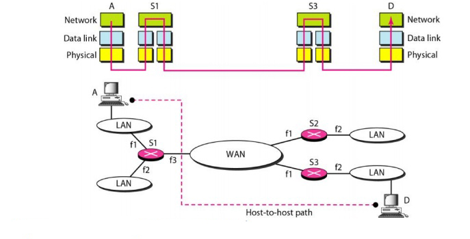

Subscribe Us
Back
Functionalities of NETWORK LAYER
first
INTERNETWORKING

To enable communication, every individual network node or phase is designed with similar protocol or communication logic, that is Transfer Control Protocol (TCP) or Internet Protocol (IP). Once a network communicates with another network having constant communication procedures, it’s called Internetworking. Internetworking was designed to resolve the matter of delivering a packet of information through many links.
There are chiefly 3 unit of Internetworking: * Extranet * Intranet * Internet Intranets and extranets might or might not have connections to the net. If there is a connection to the net, the computer network or extranet area unit is usually shielded from being accessed from the net if it is not authorized. The net isn’t thought-about to be a section of the computer network or extranet, though it should function a portal for access to parts of associate degree extranet.
Extranet – It’s a network of the internetwork that’s restricted in scope to one organization or entity however that additionally has restricted connections to the networks of one or a lot of different sometimes, however not essential. It’s very lowest level of Internetworking, usually enforced in an exceedingly personal area. Associate degree extranet may additionally be classified as a Man, WAN, or different form of network however it cannot encompass one local area network i.e. it should have a minimum of one reference to associate degree external network.
Intranet – This associate degree computer network could be a set of interconnected networks, which exploits the Internet Protocol and uses IP-based tools akin to web browsers and FTP tools, that’s underneath the management of one body entity. That body entity closes the computer network to the remainder of the planet and permits solely specific users. Most typically, this network is the internal network of a corporation or different enterprise. An outsized computer network can usually have its own internet server to supply users with browseable data.
Internet – A selected Internetworking, consisting of a worldwide interconnection of governmental, academic, public, and personal networks based mostly upon the Advanced analysis comes Agency Network (ARPANET) developed by ARPA of the U.S. Department of Defense additionally home to the World Wide Web (WWW) and cited as the ‘Internet’ to differentiate from all different generic Internetworks. Participants within the web, or their service suppliers, use IP Addresses obtained from address registries that management assignments.
Internetworking has evolved as an answer to a few key problems: Isolated LANs, duplication of resources, and an absence of network management. Isolated LANs created transmission problem between totally different offices or departments. Duplication of resources meant that constant hardware and code had to be provided to every workplace or department, as did a separate support employee. This lack of network management meant that no centralized methodology of managing and troubleshooting networks existed.